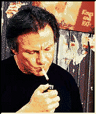

Contents | Features | Reviews | Books | Archives | Store |
 |
|
| Movie Credits | Buy It! |
Smoke
Review by Carrie Gorringe
|  |
Starring William Hurt, Screenplay by Paul Auster. |
It's a very hot summer in Brooklyn in 1990, and the tobacco shop run by Auggie Wren (Keitel) is the center of the universe for a select group. Aside from the various assortment of faceless regulars, the lives of three individuals intersect with Augie's in ways that seem almost random. Paul Benjamin (Hurt) is a novelist who has been suffering from a severe case of writer's block since his wife was accidentally killed while passing by a bank robbery (she had gone to Auggie's shop to get some cigarettes for Paul). Ruby (Channing), cutting a rather blowsy figure with her dyed hair and black eye patch, is one of Auggie's old flames. But this one claims to burn a little brighter than the others, courtesy of her claim that he is the father of a daughter (Judd) whom he's never seen. Said daughter is now several months pregnant, living in a crack house, and goes by the most infelicitous name of Felicity. Rachid (Perrineau) is an articulate young man with a fairly mysterious past, on the run from two thugs who are out to eliminate him. He also has a passel of aliases and alibis, all of which add up to some connection to an out-of town auto mechanic named Thomas Cole (Whitaker). Rachid's entrance into Auggie and Paul's neighborhood and lives sets an unlikely chain of events into motion.
Smoke is a difficult film to describe, precisely because its narrative structure seems to meander in an almost leisurely fashion around the landscape of its characters. Time is, after all, its central metaphor, for nearly every character in the film has suffered from bad timing of some sort or another, or, more appropriately, the arbitrariness of time. The metaphor is underscored by Auggie's unusual taste in photography (for the past fifteen years he has taken a photograph of the tobacco shop at the same time every day). Such an avocation is not, as might be imagined, the futile act of a narrow mind. Through his photography, one gains the impression that Auggie is freezing time, attempting to gain some limited control over and record of the multiplicity of events that occur outside his window. Moreover, the value of Auggie's project is made apparent to Paul, who discovers an image of his wife while flipping though one of Auggie's many photo albums (this after having derided Auggie for the putative sameness of his pictures): Paul's wife inadvertently appears in one of the photographs. Auggie's work attests to that most obvious of qualities in photographs, what Roland Barthes referred to as the "what-has-been", or the way in which photographs attest to the literal existence of someone or something within history (if not always to the context in which he/she/it existed). Paul discovers both in Auggie's work, as he invests the image of his wife with all of the memories he associated with her. Not surprisingly, the catharsis that results from his ability to face the past becomes a significant factor in clearing his writer's block, because it restores his empathy with the outside world. For Paul, and everyone else in the film, the passage of time alone does not heal past damage; only action can do it.
In keeping with its concentration upon the almost-subliminal, Smoke also celebrates the beauty and comprehends the pain that is derived from the smallest of gestures and actions, and how these gestures and actions always come back to haunt an individual, most specifically within the realm of fatherhood. All of the men in question have had their paternal instincts denied and/or thwarted. Auggie and Paul are the most obvious examples: the former, confronted with a daughter whose personality has already been formed, apparently for the worse, and Paul, whose wife was murdered when she was pregnant. Only after Paul and Auggie have been obliged to act upon their own interrupted patterns of parenthood can they attempt to become "fathers" to Rachid, utilizing the same enforced confrontation of truth upon him that was visited upon them. Unfortunately, the consequences of their actions are never resolved, and may have done more harm than good.
For all of the semantic implications included in Smoke, the film never descends to the realm of the didactic to make its point. Its approach is always subtle, but persistent. Consequently, it's an absolute pleasure to watch, from beginning to end. For those who dislike narrative film because of its insistence upon sacrificing the pleasures of lingering over details in a complex story to the imperatives of moving the narrative forward, this is their film. Screenwriter (and avant-garde novelist) Paul Auster integrates every element with consummate ease. The final scene in particular illustrates how powerfully affecting Smoke's little gestures are. Auggie and Paul gather for lunch at a local deli, and the cost of that lunch is at stake, since Paul has promised to pay if Auggie can come up with a Christmas story to help Paul meet a publication deadline. As Auggie begins his story (a true one, he assures Paul with a grin that seems to be half-joking), the camera frames them both in a medium shot. Halfway through the story, the camera begins to move in on Auggie almost imperceptibly, until, by the end of the story Auggie is framed in an extreme close-up. One never really knows whether the story, one which is both funny and touching, or the camera movement is responsible for the film achieving a sense of the beatific at this moment, and, in the end, it's really difficult to care either way, because the film's manipulations don't leave the audience feeling insulted; it's no wonder that this scene was adapted from one of Auster's short stories, originally entitled -- what else -- Auggie Wren's Christmas Story, and that it was the impetus for this collaboration between Wang and Auster.
As if Smoke's obvious merits weren't enough, every performance it contains is exquisite. It's a mystery as to why none of them were nominated for Oscars, because every one of them is of that caliber. After his "rediscovery" by audiences in Tarantino's Reservoir Dogs (1992) and Jane Campion's The Piano (1993), Keitel demonstrates once again why his understated style makes him one of the finest actors in Hollywood. No longer in possession of the pretty-boy looks with which he graced Scorsese's early work, Keitel now projects on screen a worn handsomeness that is much stronger because it originates from within. His Auggie is bemused, rumpled and has been buffeted by life, but he is no loser; within the admittedly narrow parameters of his life, Auggie has dignity and purpose, and, more importantly, very little self-delusion about how things really are. It is this latter quality that rightfully renders Auggie the center of his own universe. The role of Paul Benjamin requires the skills of an actor who has to move rapidly between artistic sensitivity and inner toughness without weakening either, and Hurt does exactly that, and more. He gives to Paul a deep personal vulnerability, one which doesn't rely upon excesses in either words or deeds to get his point across. Channing, in her all-too-brief appearance as Ruby, balances brashness, despair and hopelessness with masterful ease. Likewise for Perrineau and Whitaker, about whose remarkable and beautifully-nuanced work not enough can be said. But the best performance by far in the film is that of Ashley Judd, who, in one unforgettable scene (the only scene in which she appears) manages to belie the foul-mouthed demeanor that she displayed to Ruby and Auggie; as the camera moves in to rest upon her face, she conveys a lifetime of emotional deprivation and vulnerability in one single, heart-breaking glance. Like everyone else, she is weak, but, unlike those who find self-enlightenment in the course of the film, or have it imposed upon them, her future is even less certain than theirs. She isn't the only victim in Smoke, but her case is the most tragic.
No doubt for many in the audience, the most tragic aspect of Smoke is the regularity and the alacrity with which many of the characters put tobacco products into contact with their respiratory systems. But Smoke is a world in which the Surgeon General's warnings don't and shouldn't apply. The film almost seems a throwback to an era in which smoking was as much a social function as a habit, one that, for Auggie and Paul in particular, provides them with the assurance of daily human contact and the resultant potential for personal growth and friendship. It is this immediate concrete result, rather than any perceived health threat, that makes the tobacco store significant. To paraphrase a title of a recent social history of smoking, Smoke is sublime, even in the opinion of this non-smoker. Even better, it won't burn holes in your clothes, although most of the characters are endearing enough to possibly burn a hole or two in your heart.
Contents | Features | Reviews | Books | Archives | Store
Copyright © 1999 by Nitrate Productions, Inc. All Rights Reserved.